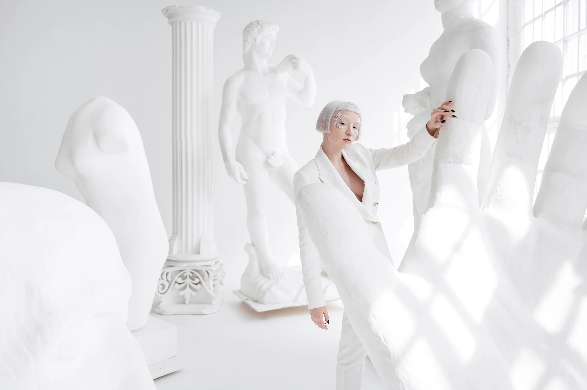
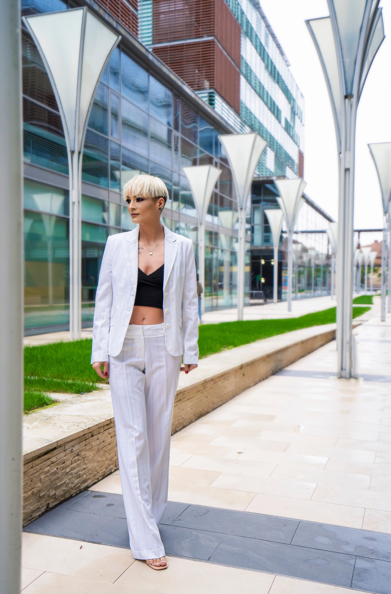
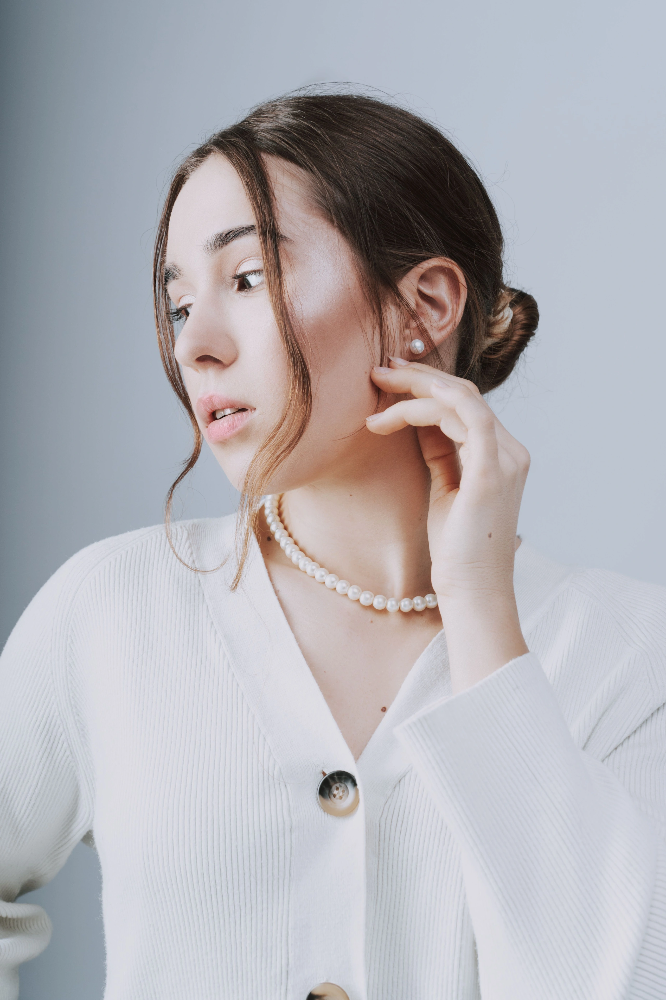
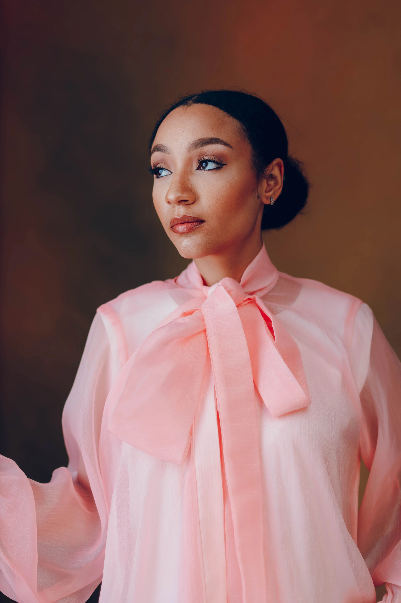
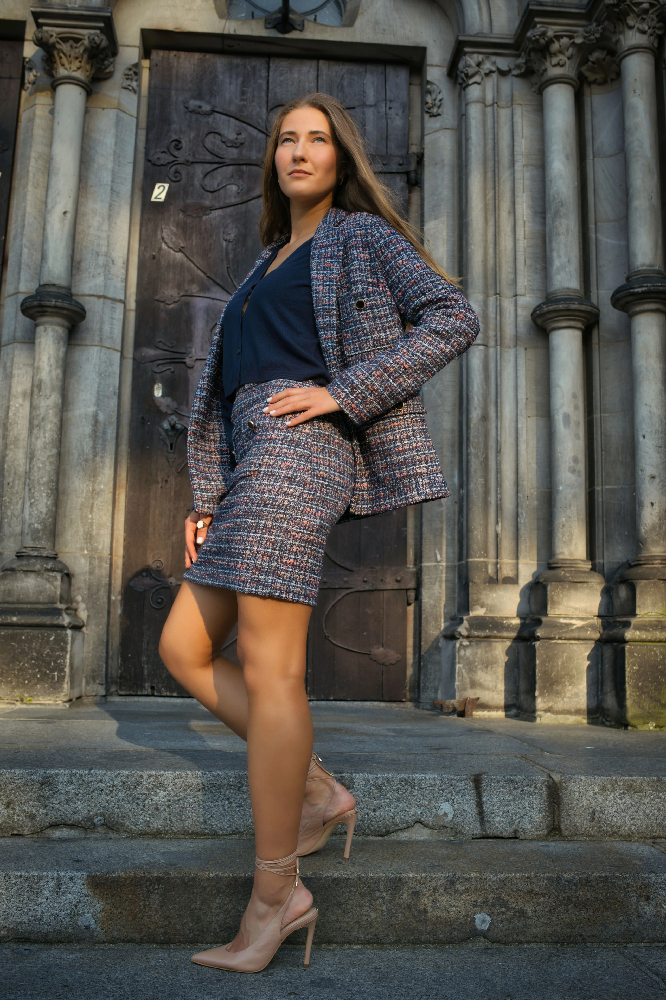
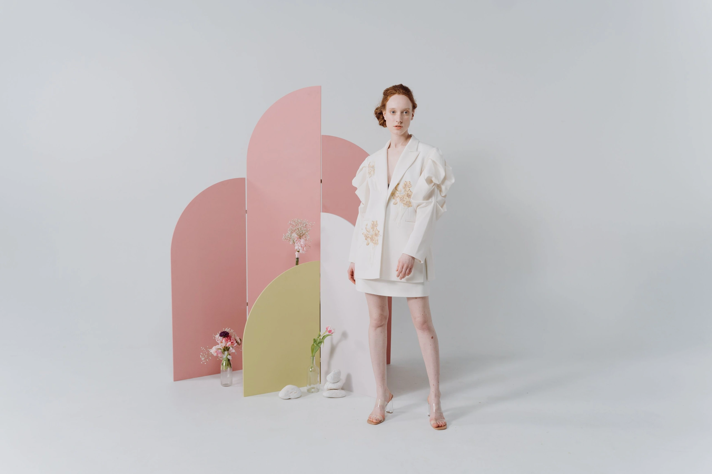

Mob Wife
复古强势风 ↗
深色剪裁，让一件夸张配饰成为重心。
视频标签：Mob wife风 · 4K截图THE STYLE ATLAS / VOL. 01
Three looks. A closer reading.
读懂一套衣服，不必先记住所有品牌。先看轮廓、颜色与配饰比例，再用具体作品把风格放进自己的日常。
Mob Wife
深色剪裁，让一件夸张配饰成为重心。
视频标签：Mob wife风 · 4K截图
Napoleon Core
短外套、收腰线与层叠珠链，读装饰的秩序。
视频标签：Napoleon core / 拿破仑风格 · 4K截图
Polished Heiress
浅色短套装，用细节和小比例配件完成精致感。
视频标签：千金风 · 4K截图STYLE IN FOCUS / A WIDER FRAME
三种风格，18幅摄影：从影棚到建筑与室内，观察剪裁、配饰和场景如何彼此呼应。每种风格各有6张参考图，点击图片可放大。

纯色影棚 / STUDIO
粉色背景把黑色衣服与亮色首饰分得很清楚。耳饰与靠近脸部的手势形成呼应，适合观察复古强势风如何用配饰组织注意力。
A clean pink background gives a dark silhouette and expressive jewelry room to work. Read the scale and placement of the accessories before choosing one statement piece.
放进复古强势风看一看 ↗
建筑外景 / ARCHITECTURE
黑白影像省去颜色的干扰，长线条外套与石墙雕刻留下形状的对话。领口的留白和深色轮廓，让姿态显得利落而有力量。
Dark tailoring meets carved stone and strong shadow. Study the long silhouette, the open neckline and the contrast between the figure and the setting.
放进复古强势风看一看 ↗
墙影与纹理 / CHIAROSCURO
蓬松的动物纹外套把肩部与袖口放大，深色内搭和系带靴为轮廓收边。墙上的几何阴影与交叠坐姿形成清晰的折线，让这套造型显得沉着而有分量。
A voluminous animal-patterned coat gives the shoulders and sleeves a sculptural outline, balanced by a dark base and lace-up boots. Geometric shadows and the crossed-leg pose bring a crisp, controlled rhythm to the look.
放进复古强势风看一看 ↗
影院暗场 / CINEMA
焦糖色的蓬松外套从黑色内搭中浮出来，垂坠的十字形耳饰为脸侧点亮一条细线。红色座席、深色长靴与大面积阴影，把复古的华丽感带进一幕安静而戏剧性的影院场景。
A rust-coloured, plush-textured coat stands out over dark layers, with a long cross-shaped earring drawing a fine line beside the face. Red cinema seats, black boots and deep shadows give the outfit a quiet, theatrical presence.
放进复古强势风看一看 ↗
建筑楼梯 / ARCHITECTURE
棕色毛感外套松松落在肩侧，黑色上衣、花纹丝袜和细带高跟鞋把视觉重心拉向修长的腿部。墨镜与交叠坐姿延续了利落的态度，层层台阶和拱形门洞则为造型搭起一个有纵深的舞台。
A brown, fur-textured coat rests loosely at the shoulders above a black blouse, patterned tights and ankle-strap heels. Sunglasses and crossed legs set a composed tone, while receding steps and an arched doorway frame the outfit with architectural depth.
放进复古强势风看一看 ↗
浅色影棚 / STUDIO
黑色连衣裙以简洁的线条留出身体轮廓，手边垂落的蓬松羽饰则把戏剧感集中在一侧。红唇、卷发与深色高跟鞋呼应出复古晚装的神情，浅色背景让裙摆和羽饰的轻重对比更清楚。
A simple black dress leaves the silhouette clear, while a feathery accessory falling from one hand places the drama to one side. Red lipstick, curls and dark heels suggest a vintage evening mood against the light studio backdrop.
放进复古强势风看一看 ↗
城市夕照 / SUNSET
立领、整齐的门襟与腰部金色点缀，把视线沿着身体中线排开。罗马斗兽场与夕照为浅色造型增加暖意，也让装饰的秩序更容易被看见。
An upright collar and ordered gold-tone accents offer a contemporary study in disciplined detail. The source identifies Rome and the Colosseum; warm evening light gives the pale outfit a softer setting.
放进拿破仑风看一看 ↗
浅色影棚 / STUDIO
米色外套在浅色背景前留下清楚的轮廓，内层图案与翻起的袖口增加层次。先看剪裁怎样建立秩序，再考虑用珠链或扣饰调整装饰的分量。
A pale studio setting makes the jacket outline easy to read. Begin with the tailoring and layered sleeves, then consider how a necklace or decorative button could change the balance.
放进拿破仑风看一看 ↗
纯灰影棚 / STUDIO
四枚金色钮扣点亮短身黑外套；清晰的肩线与抬高的下摆，把视觉重心放在比例和腰线。
Four gold-tone buttons punctuate a cropped black jacket. The defined shoulders and high hem focus attention on proportion and the waist.
放进拿破仑风看一看 ↗
暖棕影棚 / STUDIO
凸纹金色钮扣在黑外套前襟与袖口重复排列，帽子和系于头部的丝巾则在暖棕背景前勾勒面部。
Raised gold-tone buttons repeat across the black jacket and cuffs, while a cap and tied scarf frame the face against warm brown.
放进拿破仑风看一看 ↗
石墙近景 / DETAIL
细金色链条与不规则白色吊坠落在深色翻领之间；珠白耳饰和手链彼此呼应，背景是有纹理的石墙。
A fine gold-tone chain and irregular white pendant sit between dark lapels; matching pale earrings and a bracelet echo the detail beside a stone wall.
放进拿破仑风看一看 ↗
珠链近景 / DETAIL
单层珠白串珠配金色心形吊坠，落在宽大的白色翻领之间，让领口成为克制的视觉焦点。
A single strand of pale beads and a gold-tone heart pendant sits inside broad white lapels, turning the neckline into a quiet focal point.
放进拿破仑风看一看 ↗
雕塑空间 / SCULPTURE
白色衣服、古典雕像与斜向窗影形成几层明暗。整套浅色搭配的轻盈，来自衣物、背景与留白的共同作用；光影让轮廓从白色空间里分离出来。
A white suit is framed by classical sculpture, window light and generous negative space. A pale outfit can feel composed through the setting as much as through an accessory.
放进千金风看一看 ↗
玻璃建筑 / ARCHITECTURE
白色套装的纵向线条，与玻璃幕墙和立柱形成对应。相较视频里的短裙套装，这是一种更舒展的浅色剪裁延伸，适合观察全身比例。
The vertical line of a pale trouser suit is echoed by glass and columns. This is a longer, more relaxed tailoring reference alongside the cropped set seen in the video.
放进千金风看一看 ↗
浅灰影棚 / DETAIL
浅色开衫以简洁领口和纽扣建立秩序，颈间圆珠与耳饰形成呼应。利落低髻与轻抬的手势，让精致感落在清楚而克制的细节上。
A pale cardigan, a single strand of pale beads and rounded earrings keep the look composed. The neat low bun and relaxed hand gesture draw attention to the neckline without crowding it.
放进千金风看一看 ↗
暖棕背景 / STUDIO
大幅粉色领结成为画面的明确重心，宽松袖线保留柔和体积。低髻、小耳饰与侧向目光共同收住比例，让蝴蝶结的存在感保持优雅。
An oversized pink neck bow gives a simple blouse a deliberate focal point. A smooth low bun, small earrings and a turned gaze keep the large bow balanced and the silhouette calm.
放进千金风看一看 ↗
雕饰门廊 / ARCHITECTURE
同纹理外套与短裙形成清楚的成套轮廓，深色内搭稳住视觉中心。交叠的脚踝与尖头鞋延续腿部线条，雕饰门廊则把日常套装放进更完整的场景。
A coordinated textured jacket and short skirt create a clear, compact outline. The darker top anchors the set, while crossed ankles and pointed heels bring a measured rhythm to the carved architectural frame.
放进千金风看一看 ↗
几何布景 / SET DESIGN
浅色外套与短裙通过立体肩部装饰和局部点缀建立造型重点。粉色与浅绿几何板呼应柔和色调，端正站姿让肩线、裙长与腿部比例一眼可读。
A pale jacket and short skirt turn into a sculptural outfit through raised shoulder details and small decorative accents. Pink and pale green panels echo the outfit’s soft palette, while the straight stance keeps its proportions easy to read.
放进千金风看一看 ↗CREATORS / PHOTOGRAPHERS / PLACES
从穿搭作者的完整造型，到摄影师如何选择空间。以下入口直达原站作品。
造型创作者 / STYLE CREATOR
本人文章把 Toteme 围饰称为 faux fur，并列出 The Row Margaux 手袋。观察蓬松体积与包袋比例，以及浅色门廊如何衬出轮廓。
到作者原站看完整作品 ↗原文 2024-11-26 · 原作图片 1440×1920造型创作者 / STYLE CREATOR
粉色外套、层叠珠链与白色小包，组成她的 Chanel Cruise 21/22 看秀造型。原文记录在 Hamburg 水边拍摄，可以一起观察珠链的长短、浅色搭配与背景的关系。
到作者原站看完整作品 ↗原文 2021-05-04 · 原作图片 1536×2305造型创作者 / STYLE CREATOR
灰色收腰西装、亮色首饰与金色墙板，在人物周围形成清楚的层次。看她如何用室内线条衬托剪裁，再到完整文章里比较不同场景的造型。
到作者原站看完整作品 ↗原文 2026-03-25 · 原作图片 1920×2560摄影作品 / PHOTOGRAPHY
Suffo Moncloa 为 Balmain 2026 秋冬拍摄的官方大片，以 John Lautner 设计的住宅为场景。黑白、鲜明肩线、人物姿态与建筑曲面一起，形成戏剧性的空间关系。
到作者原站看完整作品 ↗原作图片 2160×2700READ / CONNECT / WEAR
每种风格都保留可回看的视频时间点，拆解画面里实际能看见的细节。
用具体系列和官方作品的设计特征解释匹配理由，一个品牌可以进入不同风格。
每种风格给出三件本站已有款式。美元参考保留原日期，档案报价和快照各自标明。